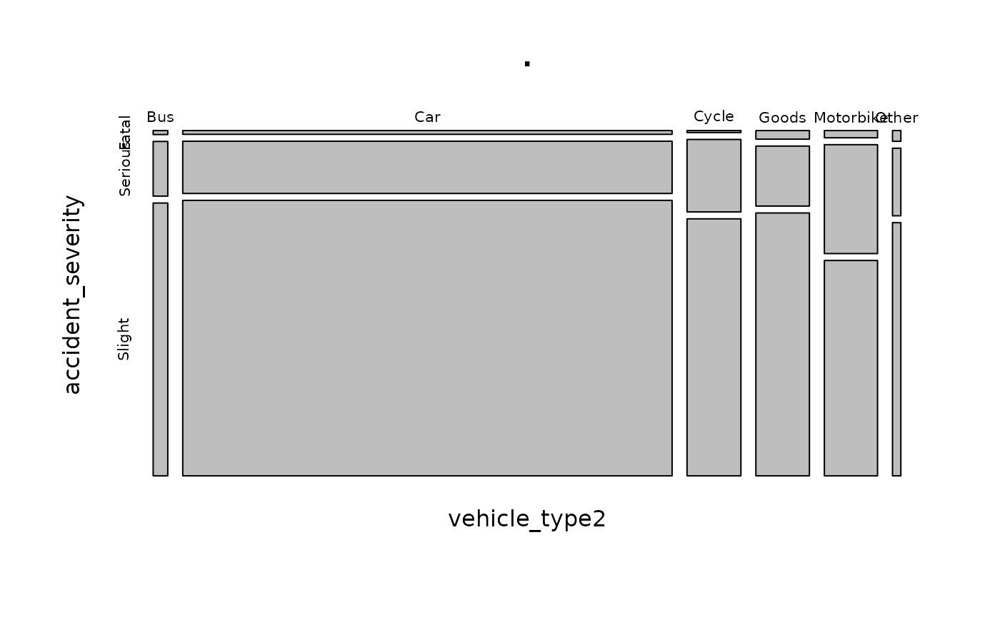

Researching vehicles involved in collisions with STATS19 data
Source:vignettes/stats19-vehicles.Rmd
stats19-vehicles.RmdVehicle level variables in the STATS19 datasets
Of the three dataset types in STATS19, the vehicle tables are perhaps the most revealing yet under-explored. They look like this:
v = get_stats19(year = 2018, type = "vehicles")
#> Files identified: dftRoadSafetyData_Vehicles_2018.csv
#> http://data.dft.gov.uk.s3.amazonaws.com/road-accidents-safety-data/dftRoadSafetyData_Vehicles_2018.csv
#> Attempt downloading from:
#> Data saved at /tmp/RtmpLLMKz3/dftRoadSafetyData_Vehicles_2018.csv
v
#> # A tibble: 226,409 x 23
#> accident_index vehicle_reference vehicle_type towing_and_articul…
#> <chr> <int> <chr> <chr>
#> 1 2018010080971 1 Car No tow/articulation
#> 2 2018010080971 2 Taxi/Private hire car No tow/articulation
#> 3 2018010080973 1 Car No tow/articulation
#> 4 2018010080974 1 Taxi/Private hire car No tow/articulation
#> 5 2018010080974 2 Car No tow/articulation
#> 6 2018010080981 1 Car No tow/articulation
#> 7 2018010080981 2 Van / Goods 3.5 tonnes … No tow/articulation
#> 8 2018010080982 1 Taxi/Private hire car No tow/articulation
#> 9 2018010080982 2 Car No tow/articulation
#> 10 2018010080983 1 Car No tow/articulation
#> # … with 226,399 more rows, and 19 more variables: vehicle_manoeuvre <chr>,
#> # vehicle_location_restricted_lane <int>, junction_location <chr>,
#> # skidding_and_overturning <chr>, hit_object_in_carriageway <int>,
#> # vehicle_leaving_carriageway <int>, hit_object_off_carriageway <int>,
#> # first_point_of_impact <chr>, was_vehicle_left_hand_drive <chr>,
#> # journey_purpose_of_driver <chr>, sex_of_driver <chr>, age_of_driver <int>,
#> # age_band_of_driver <int>, engine_capacity_cc <int>, propulsion_code <chr>,
#> # age_of_vehicle <int>, driver_imd_decile <chr>, driver_home_area_type <int>,
#> # vehicle_imd_decile <int>We will categorise the vehicle types to simplify subsequent results:
v = v %>% mutate(vehicle_type2 = case_when(
grepl(pattern = "motorcycle", vehicle_type, ignore.case = TRUE) ~ "Motorbike",
grepl(pattern = "Car", vehicle_type, ignore.case = TRUE) ~ "Car",
grepl(pattern = "Bus", vehicle_type, ignore.case = TRUE) ~ "Bus",
grepl(pattern = "cycle", vehicle_type, ignore.case = TRUE) ~ "Cycle",
# grepl(pattern = "Van", vehicle_type, ignore.case = TRUE) ~ "Van",
grepl(pattern = "Goods", vehicle_type, ignore.case = TRUE) ~ "Goods",
TRUE ~ "Other"
))
# barplot(table(v$vehicle_type2))All of these variables are of potential interest to road safety researchers. Let’s take a look at summaries of a few of them:
table(v$vehicle_type2)
#>
#> Bus Car Cycle Goods Motorbike Other
#> 4918 164645 18125 18020 17890 2811
summary(v$age_of_driver)
#> Min. 1st Qu. Median Mean 3rd Qu. Max.
#> -1.00 23.00 35.00 35.52 50.00 101.00
summary(v$engine_capacity_cc)
#> Min. 1st Qu. Median Mean 3rd Qu. Max.
#> -1 125 1398 1444 1956 99999
table(v$propulsion_code)
#>
#> Electric Electric diesel Gas Gas/Bi-fuel
#> 266 67 31 130
#> Heavy oil Hybrid electric Petrol Petrol/Gas (LPG)
#> 77109 3821 93644 29
summary(v$age_of_vehicle)
#> Min. 1st Qu. Median Mean 3rd Qu. Max.
#> -1.000 -1.000 5.000 5.727 10.000 84.000The output shows vehicle type (a wide range of vehicles are represented), age of driver (with young and elderly drivers often seen as more risky), engine capacity and populsion (related to vehicle type and size) and age of vehicle. In addition to these factors appearing in prior road safety research and debate, they are also things that policy makers can influence, e.g by:
- Encouraging modal shift away more dangerous modes and towards safer modes
- Incentivising people in particular risk categories to use safer modes
- Encouraging use of certain (safer) kinds of vehicle, e.g. with tax policies
Relationships between vehicle type and crash severity
To explore the relationship between vehicles and crash severity, we must first join on the ‘accidents’ table:
a = get_stats19(year = 2018, type = "accidents")
#> Files identified: dftRoadSafetyData_Accidents_2018.csv
#> http://data.dft.gov.uk.s3.amazonaws.com/road-accidents-safety-data/dftRoadSafetyData_Accidents_2018.csv
#> Attempt downloading from:
#> Data saved at /tmp/RtmpLLMKz3/dftRoadSafetyData_Accidents_2018.csv
#> Reading in:
#> /tmp/RtmpLLMKz3/dftRoadSafetyData_Accidents_2018.csv
#> date and time columns present, creating formatted datetime column
va = dplyr::inner_join(v, a)
#> Joining, by = "accident_index"Now we have additional variables available to us:
dim(v)
#> [1] 226409 24
dim(va)
#> [1] 226409 56
names(va)
#> [1] "accident_index"
#> [2] "vehicle_reference"
#> [3] "vehicle_type"
#> [4] "towing_and_articulation"
#> [5] "vehicle_manoeuvre"
#> [6] "vehicle_location_restricted_lane"
#> [7] "junction_location"
#> [8] "skidding_and_overturning"
#> [9] "hit_object_in_carriageway"
#> [10] "vehicle_leaving_carriageway"
#> [11] "hit_object_off_carriageway"
#> [12] "first_point_of_impact"
#> [13] "was_vehicle_left_hand_drive"
#> [14] "journey_purpose_of_driver"
#> [15] "sex_of_driver"
#> [16] "age_of_driver"
#> [17] "age_band_of_driver"
#> [18] "engine_capacity_cc"
#> [19] "propulsion_code"
#> [20] "age_of_vehicle"
#> [21] "driver_imd_decile"
#> [22] "driver_home_area_type"
#> [23] "vehicle_imd_decile"
#> [24] "vehicle_type2"
#> [25] "location_easting_osgr"
#> [26] "location_northing_osgr"
#> [27] "longitude"
#> [28] "latitude"
#> [29] "police_force"
#> [30] "accident_severity"
#> [31] "number_of_vehicles"
#> [32] "number_of_casualties"
#> [33] "date"
#> [34] "day_of_week"
#> [35] "time"
#> [36] "local_authority_district"
#> [37] "local_authority_highway"
#> [38] "first_road_class"
#> [39] "first_road_number"
#> [40] "road_type"
#> [41] "speed_limit"
#> [42] "junction_detail"
#> [43] "junction_control"
#> [44] "second_road_class"
#> [45] "second_road_number"
#> [46] "pedestrian_crossing_human_control"
#> [47] "pedestrian_crossing_physical_facilities"
#> [48] "light_conditions"
#> [49] "weather_conditions"
#> [50] "road_surface_conditions"
#> [51] "special_conditions_at_site"
#> [52] "carriageway_hazards"
#> [53] "urban_or_rural_area"
#> [54] "did_police_officer_attend_scene_of_accident"
#> [55] "lsoa_of_accident_location"
#> [56] "datetime"Let’s see how crash severity relates to the variables of interest mentioned above:
xtabs(~vehicle_type2 + accident_severity, data = va) %>% prop.table()
#> accident_severity
#> vehicle_type2 Fatal Serious Slight
#> Bus 0.0002605903 0.0035820131 0.0178791479
#> Car 0.0082063876 0.1146465026 0.6043487671
#> Cycle 0.0004814296 0.0174993044 0.0620735041
#> Goods 0.0020626389 0.0144075545 0.0631202823
#> Motorbike 0.0017181296 0.0259574487 0.0513407153
#> Other 0.0004019275 0.0025308181 0.0094828386
xtabs(~vehicle_type2 + accident_severity, data = va) %>% prop.table() %>% plot()
As expected, crashes involving large vehicles such as buses and good vehicles tend to be more serious (involve proportionally more deaths) than crashes involving smaller vehicles.
To focus only on cars, we can filter the va table as follows:
vac = va %>% filter(vehicle_type2 == "Car")The best proxy we have for car type in the open STATS19 data (there are non-open versions of the data with additional columns) is engine capacity, measured in cubic centimetres (cc). The distribution of engine cc’s in the cars dataset created above is shown below.
summary(vac$engine_capacity_cc)
#> Min. 1st Qu. Median Mean 3rd Qu. Max.
#> -1 1198 1560 1440 1968 19997The output shows that there are some impossible values in the data, likely due to recording error. Very few cars have an engine capacity above 5 litres (5000 cc) and we can be confident that none have an engine capacity below 300 cc. We’ll identify these records and remove them as follows:
We have set the anomolous vehicle size data to NA meaning it will not be used in the subsequent analysis.